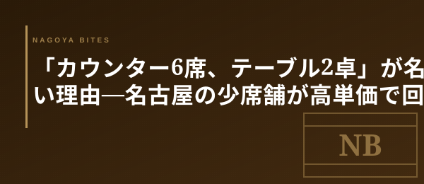

🗝 業界の裏側コラム
「カウンター6席、テーブル2卓」が名物店に多い理由 — 名古屋の少席舗が高単価で回るカラクリ
名古屋の「予約が取れない」と評判の店を地図に並べていくと、ある共通点が浮かぶ。客席は10〜12席前後。カウンター6席にテーブル2卓という構成が極端に多い。これは偶然ではなく、業界が長年かけて磨き上げた必勝の設計図だ。

① 売上計算が驚くほどシンプル
まず数字の話から。カウンター6席＋テーブル2卓（4名席1卓・2名席1卓）で合計12席。19時スタートの一巡目と、21時スタートの二巡目を取れば、満席で1日24名が動く。客単価12,000円なら28万8,000円、客単価15,000円なら36万円。1人で回せる人件費と、坪10〜15坪程度の家賃を引いた残りが、そのまま店の利益になる構造だ。
逆に席数を増やすと、二巡目を回す前に一巡目の客が長居する確率が上がり、回転は崩れる。「12席で2回転」は、名古屋の業界人が長年かけて検証してきた、最も読みやすい売上モデルなのだ。
② 料理人ひとりが見渡せる物理的限界
カウンター6席という数字には、もう一つ意味がある。一人の料理人が立つ位置から、全席の表情・グラスの残量・箸の進み具合まで把握できる距離は、せいぜい4〜5メートル。これが6席分の幅にちょうど収まる。
テーブル2卓を加えても、ホールに立つもう1人が物理的に視野に入る。つまり「8〜12席」という構成は、料理長の指揮が末席まで届く臨界点として設計されている。これを超えると、皿の温度や提供タイミングに必ず揺らぎが出る。名物店が席数を増やさないのは、ブレを許容しないというより、増やすと品質を保てない構造的な理由がある。
③ 「予約困難」がブランドを再生産する
少席舗のもう一つの隠れた狙いは、需要に対して常に席を不足させることで、ブランドの希少性を保つ点にある。月20日の営業×24名で月間480名分しか枠がない。SNSで話題になった瞬間、3か月先まで予約が埋まる。この「取れなさ」が、客のレビューを過剰なまでに肯定的にし、メディアの取材依頼を呼び込み、また予約が埋まる、という循環を作り出す。
業界人がよく言うのは「席数を倍にして客単価を半分にしたら、店は確実に潰れる」という言葉だ。少席舗の経営は、回転よりも単価、量よりも密度を取る選択で、ここを誤ると、ブランドも経済性も同時に崩れる。
Inside Perspective — 業界人の目利き
- 席数12席×2回転×客単価12,000〜15,000円という売上モデルは、坪10〜15坪の家賃と1〜2人の人件費で計算が立つ最小単位
- カウンター6席は料理人ひとりの視野（4〜5メートル）に収まる物理的臨界点で、これを超えると皿の温度や提供タイミングが必ず揺らぐ
- 月間480名分という供給制約が「予約困難」を演出し、レビュー・取材・予約の循環を再生産する